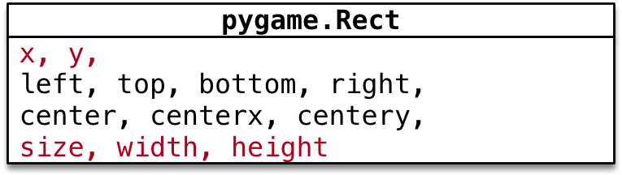

英雄登场
目标
- 设计 英雄 和 子弹 类
- 使用
pygame.key.get_pressed()移动英雄 - 发射子弹
01. 设计 英雄 和 子弹 类
英雄需求
- 游戏启动后，英雄 出现在屏幕的 水平中间 位置，距离 屏幕底部
120像素 - 英雄 每隔
0.5秒发射一次子弹，每次 连发三枚子弹 - 英雄 默认不会移动，需要通过 左/右 方向键，控制 英雄 在水平方向移动

子弹需求
- 子弹 从 英雄 的正上方发射 沿直线 向 上方 飞行
- 飞出屏幕后，需要从 精灵组 中删除

Hero —— 英雄
- 初始化方法
- 指定 英雄图片
- 初始速度 = 0 —— 英雄默认静止不动
- 定义
bullets子弹精灵组 保存子弹精灵
- 重写 update() 方法
- 英雄需要 水平移动
- 并且需要保证不能 移出屏幕
- 增加
bullets属性，记录所有 子弹精灵 - 增加
fire方法，用于发射子弹
Bullet —— 子弹
- 初始化方法
- 指定 子弹图片
- 初始速度 = -2 —— 子弹需要向上方飞行
- 重写 update() 方法
- 判断 是否飞出屏幕，如果是，从 精灵组 删除
02. 创建英雄
2.1 准备英雄类
- 在
plane_sprites新建Hero类 - 重写 初始化方法，直接指定 图片名称，并且将初始速度设置为
0 - 设置 英雄的初始位置

centerx = x + 0.5 * widthcentery = y + 0.5 * heightbottom = y + height
class Hero(GameSprite):
"""英雄精灵"""
def __init__(self):
super().__init__("./images/me1.png", 0)
# 设置初始位置
self.rect.centerx = SCREEN_RECT.centerx
self.rect.bottom = SCREEN_RECT.bottom - 120
2.2 绘制英雄
- 在
__create_sprites，添加 英雄精灵 和 英雄精灵组- 后续要针对 英雄 做 碰撞检测 以及 发射子弹
- 所以 英雄 需要 单独定义成属性
- 在
__update_sprites，让 英雄精灵组 调用update和draw方法
代码实现
- 修改
__create_sprites方法如下：
# 英雄组
self.hero = Hero()
self.hero_group = pygame.sprite.Group(self.hero)
- 修改
__update_sprites方法如下：
self.hero_group.update()
self.hero_group.draw(self.screen)
03. 移动英雄位置
在
pygame中针对 键盘按键的捕获，有 两种 方式
- 第一种方式 判断
event.type == pygame.KEYDOWN - 第二种方式
- 首先使用
pygame.key.get_pressed()返回 所有按键元组 - 通过 键盘常量，判断元组中 某一个键是否被按下 —— 如果被按下，对应数值为
1
- 首先使用
提问 这两种方式之间有什么区别呢？
- 第一种方式
elif event.type == pygame.KEYDOWN and event.key == pygame.K_RIGHT:
print("向右移动...")
- 第二种方式
# 返回所有按键的元组，如果某个键被按下，对应的值会是1
keys_pressed = pygame.key.get_pressed()
# 判断是否按下了方向键
if keys_pressed[pygame.K_RIGHT]:
print("向右移动...")
结论
- 第一种方式
event.type用户 必须要抬起按键 才算一次 按键事件，操作灵活性会大打折扣 - 第二种方式 用户可以按住方向键不放，就能够实现持续向某一个方向移动了，操作灵活性更好
3.1 移动英雄位置
演练步骤
- 在
Hero类中重写update方法- 用 速度
speed和 英雄rect.x进行叠加 - 不需要调用父类方法 —— 父类方法只是实现了单纯的垂直运动
- 用 速度
- 在
__event_handler方法中根据 左右方向键 设置英雄的 速度- 向右 =>
speed = 2 - 向左 =>
speed = -2 - 其他 =>
speed = 0
- 向右 =>
代码演练
- 在
Hero类，重写update()方法，根据速度水平移动 英雄的飞机
def update(self):
# 飞机水平移动
self.rect.x += self.speed
- 调整键盘按键代码
# 获取用户按键
keys_pressed = pygame.key.get_pressed()
if keys_pressed[pygame.K_RIGHT]:
self.hero.speed = 2
elif keys_pressed[pygame.K_LEFT]:
self.hero.speed = -2
else:
self.hero.speed = 0
3.2 控制英雄运动边界
- 在
Hero类的update()方法判断 英雄 是否超出 屏幕边界
right = x + width利用right属性可以非常容易的针对右侧设置精灵位置

def update(self):
# 飞机水平移动
self.rect.x += self.speed
# 判断屏幕边界
if self.rect.left < 0:
self.rect.left = 0
if self.rect.right > SCREEN_RECT.right:
self.rect.right = SCREEN_RECT.right
04. 发射子弹
需求回顾 —— 英雄需求
- 游戏启动后，英雄 出现在屏幕的 水平中间 位置，距离 屏幕底部
120像素 - 英雄 每隔
0.5秒发射一次子弹，每次 连发三枚子弹 - 英雄 默认不会移动，需要通过 左/右 方向键，控制 英雄 在水平方向移动
4.1 添加发射子弹事件
pygame 的 定时器 使用套路非常固定：
- 定义 定时器常量 ——
eventid - 在 初始化方法 中，调用
set_timer方法 设置定时器事件 - 在 游戏循环 中，监听定时器事件
代码实现
- 在
Hero中定义fire方法
def fire(self):
print("发射子弹...")
- 在
plane_main.py的顶部定义 发射子弹 事件常量
# 英雄发射子弹事件
HERO_FIRE_EVENT = pygame.USEREVENT + 1
- 在
__init__方法末尾中添加 发射子弹 事件
# 每隔 0.5 秒发射一次子弹
pygame.time.set_timer(HERO_FIRE_EVENT, 500)
- 在
__event_handler方法中让英雄发射子弹
elif event.type == HERO_FIRE_EVENT:
self.hero.fire()
4.2 定义子弹类
需求回顾 —— 子弹需求
- 子弹 从 英雄 的正上方发射 沿直线 向 上方 飞行
- 飞出屏幕后，需要从 精灵组 中删除
Bullet —— 子弹
- 初始化方法
- 指定 子弹图片
- 初始速度 = -2 —— 子弹需要向上方飞行
- 重写 update() 方法
- 判断 是否飞出屏幕，如果是，从 精灵组 删除
定义子弹类
- 在
plane_sprites新建Bullet继承自GameSprite - 重写 初始化方法，直接指定 图片名称，并且设置 初始速度
- 重写
update()方法，判断子弹 飞出屏幕从精灵组删除
class Bullet(GameSprite):
"""子弹精灵"""
def __init__(self):
super().__init__("./images/bullet1.png", -2)
def update(self):
super().update()
# 判断是否超出屏幕，如果是，从精灵组删除
if self.rect.bottom < 0:
self.kill()
4.3 发射子弹
演练步骤
- 在
Hero的 初始化方法 中创建 子弹精灵组 属性 - 修改
plane_main.py的__update_sprites方法，让 子弹精灵组 调用update和draw方法 - 实现
fire()方法- 创建子弹精灵
- 设置初始位置 —— 在 英雄的正上方
- 将 子弹 添加到精灵组
代码实现
- 初始化方法
# 创建子弹的精灵组
self.bullets = pygame.sprite.Group()
- 修改
fire()方法
def fire(self):
# 1. 创建子弹精灵
bullet = Bullet()
# 2. 设置精灵的位置
bullet.rect.bottom = self.rect.y - 20
bullet.rect.centerx = self.rect.centerx
# 3. 将精灵添加到精灵组
self.bullets.add(bullet)
一次发射三枚子弹

- 修改
fire()方法，一次发射三枚子弹
def fire(self):
for i in (1, 2, 3):
# 1. 创建子弹精灵
bullet = Bullet()
# 2. 设置精灵的位置
bullet.rect.bottom = self.rect.y - i * 20
bullet.rect.centerx = self.rect.centerx
# 3. 将精灵添加到精灵组
self.bullets.add(bullet)